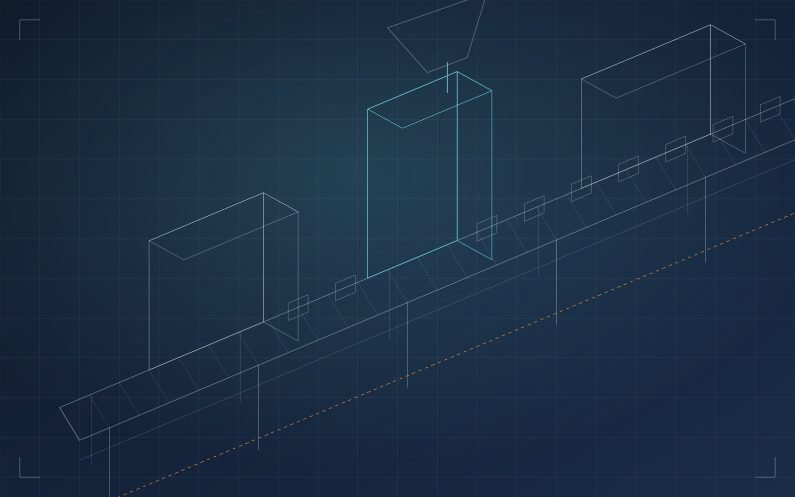
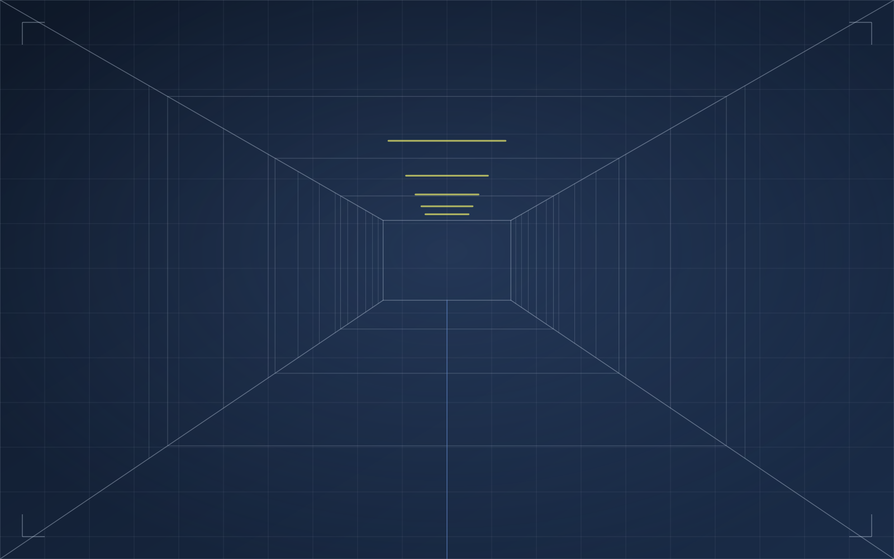

CS-01 · Pulizia tecnica
Caso da documentare
- Problema
- Da compilare con IPM
- Soluzione
- Da compilare con IPM
Pulizie industriali e multiservizi · Dal 1981
Pulizie tecniche, impianti, pavimenti in resina, imbiancature e disinfestazione per le aziende lombarde. Un solo interlocutore, squadre interne e mezzi di proprietà.
02 Dove interveniamo




Residui di lavorazione, oli e polveri su nastri, postazioni e macchinari.
Depositi, grassi e incrostazioni su superfici che non si possono smontare.
Grandi volumi, scaffalature, lavori in quota e percorsi di mezzi.
Superfici che si consumano sotto carrelli, carichi e lavaggi.
Gli ambienti del personale, dove l’igiene si vede e si misura.
03 Servizi
Lo stesso referente coordina squadre e tecniche diverse. Meno fornitori da gestire, interventi che si parlano.
01 / 06
Linee di produzione, camere bianche, macchine utensili, vasche di processo e grandi pavimentazioni. Pulizie di fondo e manutentive, anche in quota.
Lavaggio vetrate fino a 12 m senza piattaforma
02 / 06
Generatori di vapore, microsabbiatura, idropulitrici da 250 bar in su. Ghiaccio secco e bicarbonato per pulire impianti, anche alimentari, senza solventi.
Sabbiatura criogenica: nessun residuo secondario
03 / 06
Resinatura di grandi superfici industriali e commerciali e tracciatura dei percorsi interni per mezzi e pedoni, come richiesto dal D.Lgs. 81/2008.
Segnaletica orizzontale interna su richiesta

04 / 06
Capannoni, facciate, uffici e aree commerciali. Tecnologia airless per le grandi superfici, verniciatura a bassa pressione e polifusione.
Personale abilitato alle piattaforme aeree, mezzi di proprietà

05 / 06
Roditori, mosche, zanzare, vespe, cimici, piccioni. Un protocollo per aziende e allevamenti: ricerca delle tracce, esche protette, monitoraggio periodico.
Mappa delle postazioni e controlli programmati

06 / 06
Sanificazione con atomizzatori elettrostatici, pulizie civili e commerciali, pulizie post cantiere e fornitura di consumabili igienico-sanitari.
Un solo referente per più servizi
04 Il metodo
Ogni stabilimento ha turni, materiali e vincoli di sicurezza diversi. Il lavoro si progetta attorno alla tua attività, non il contrario.
Fase 01
Vediamo l’ambiente, i materiali, i vincoli di sicurezza e gli orari dell’attività. Il preventivo è gratuito e senza impegno.
Fase 02
Definiamo tecniche, attrezzature, squadra e finestre di intervento in funzione dei tuoi turni e delle aree da liberare.
Fase 03
Operano persone IPM con mezzi e attrezzature di proprietà, mantenuti nella nostra officina interna.
Fase 04
Controlliamo il risultato e, dove serve, programmiamo interventi ricorrenti e monitoraggi periodici.
Le fasi descrivono il nostro modo di lavorare: tempi e modalità si definiscono intervento per intervento.
05 Esperienza
Nata nel 1981 come impresa individuale di pulizie civili e industriali, IPM è cresciuta aggiungendo un servizio alla volta, quando i clienti ne avevano bisogno.
1981
Diego Castelli avvia un’impresa individuale di pulizie civili e industriali.
1985
Acquisto del fabbricato che ospita sede amministrativa e magazzino.
1991
L’offerta si amplia a materiale igienico-sanitario, saponi e carte.
1996
Derattizzazione, disinfestazione, resine, imbiancature industriali e segnaletica orizzontale.
2009
L’azienda si riorganizza attorno al multiservizio e all’outsourcing.
2016
Si consolida la presenza sul mercato industriale lombardo.
Oggi
Squadre interne, mezzi di proprietà e officina interna, tra Brianza, Lecco, Como, Bergamo e Milano.
1981
anno di fondazione
5
province servite in Lombardia
250+bar
pressione dei lavaggi tecnici
12m
vetrate lavate senza piattaforma
06 Progetti e interventi
Ogni scheda mostrerà ambiente, problema, soluzione adottata e risultato documentato. Spazi pronti: i casi reali verranno inseriti con foto e dati forniti da IPM.
CS-01 · Pulizia tecnica
CS-02 · Pavimento in resina
CS-03 · Imbiancatura capannone
CS-04 · Derattizzazione
07 Contatto
Descrivi l’ambiente e il problema da risolvere. Ti ricontattiamo per capire i dettagli e, se serve, per un sopralluogo. Il preventivo è gratuito e senza impegno.